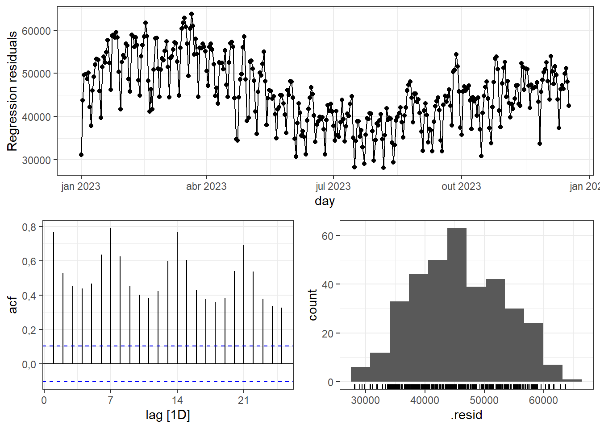
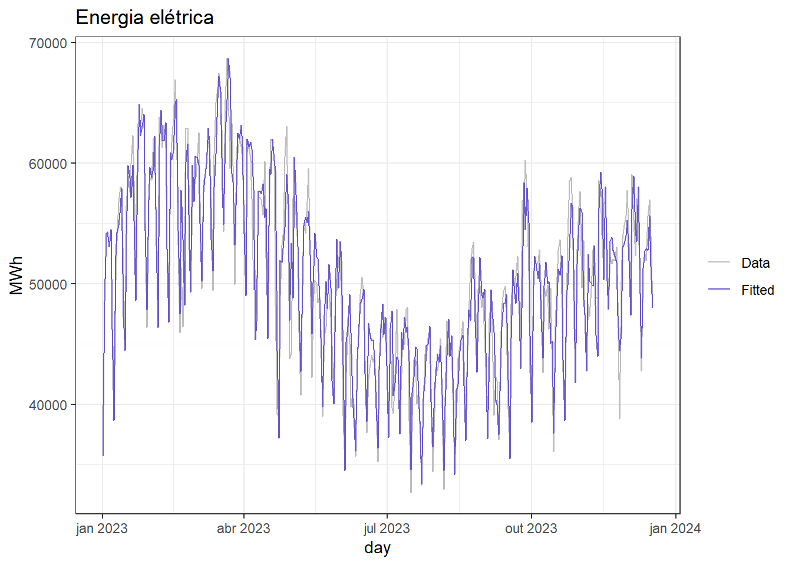
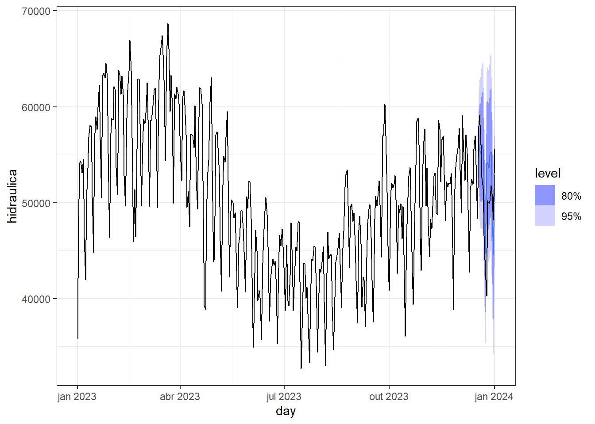
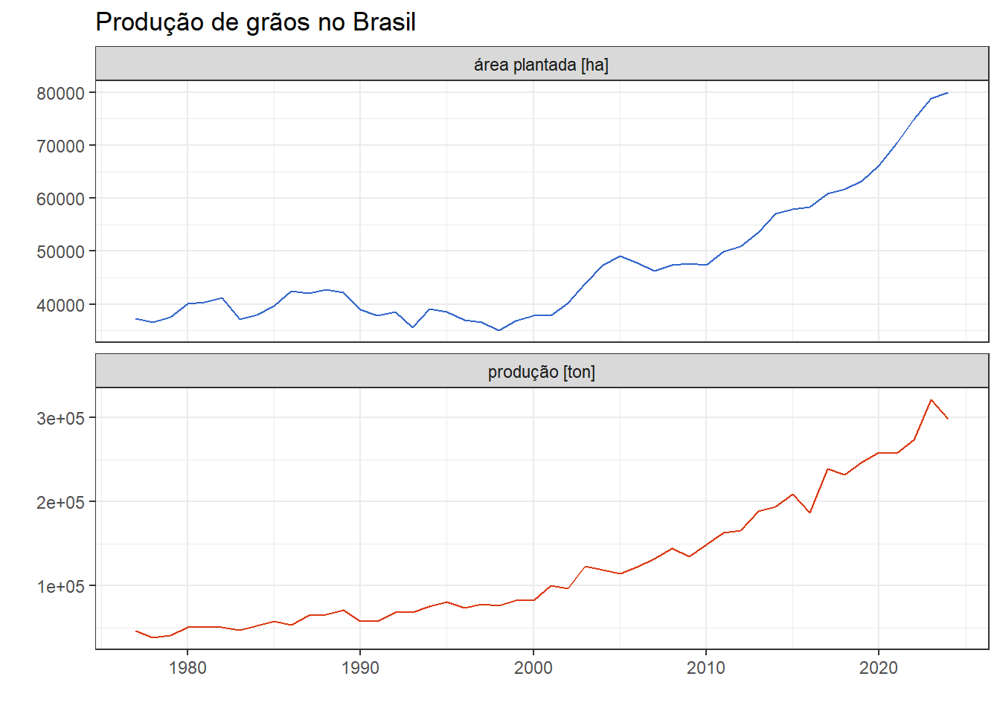

7 Regressão dinâmica
7.1 Regressão dinâmica
Os modelos de regressão dinâmica possibilitam a inclusão de variáveis ou séries temporais regressoras, além de considerar o próprio padrão dinâmico da série via ARIMA, unindo as capacidades dos métodos expostos nos capítulos 4 e 6. Um modelo de regressão dinâmica pode ser expresso conforme segue, onde \(\varepsilon_t\) é ruído branco. Ou seja, o modelo permite que os resíduos do modelo de regressão, agora denominados \(\eta_t\) sejam autocorrelacionados, de forma que a autocorrelação seja tratada por um modelo ARIMA.
Um modelo de regressão dinâmica pode ser representado conforme segue. Pode-se observar que o modelo de regressão contempla de uma até \(k\) séries temporais regressoras, \(x_{t1}, \ldots, x_{tk}\), com erro \(\eta_t\), o qual pode ser autocorrelacionado. A informação não tratada pelo modelo de regressão, \(\eta_t\), é tratada via ARIMA.
\[ \begin{matrix} y_t = \beta_0 + \beta_1x_{t1} + \cdots + \beta_kx_{tk} + \eta_t, \\ (1-\phi_1B- \ldots - \phi_pB^p)(1-B)^d\eta_t = c+( 1+\theta_1B+\ldots+\theta_qB^q)\varepsilon_t \end{matrix} \]
Os coeficientes de regressão, \(\beta_0, \ldots, \beta_k\), e do modelo ARIMA, \(\phi_1B, \ldots, \phi_p, \theta_1, \ldots, \theta_q\) são estimados em conjunto minimizando \(\varepsilon_t\) . A estimativa isolada dos coeficientes de regressão minimizando \(\eta_t\) acarretaria diversos problemas no modelo. É importante também que a série a ser predita e as regressoras sejam estacionárias, de forma que o grau de diferenciação \(d\) necessário para se obter a estacionariedade seja aplicado.
A Figura 7.1 plota séries temporais com frequência diária de consumo médio de eletricidade advinda de geração hidráulica no subsistema do sudeste e centro oeste do Brasil e de temperatura média diária da cidade de Uberlândia em Minas Gerais. Tal cidade foi considerada por ser uma que representa melhor a temperatura média de ambas as regiões dentre as monitoras pelo INMET. Pode-se sugerir um modelo de regressão dinâmica para o consumo diário de energia em função da temperatura média diária, descrevendo os erros com um modelo ARIMA.
A seguir expõe-se o resultado obtido.
Series: hidraulica
Model: LM w/ ARIMA(3,0,1)(1,1,1)[7] errors
Coefficients:
ar1 ar2 ar3 ma1 sar1 sma1 temperatura
1.7559 -0.9554 0.1928 -0.8358 -0.0487 -0.9290 62.7853
s.e. 0.1008 0.1102 0.0590 0.0929 0.0704 0.0537 60.2675
sigma^2 estimated as 2229014: log likelihood=-3005.54
AIC=6027.08 AICc=6027.51 BIC=6057.8O modelo obtido pode ser expresso conforme segue.
\[ \begin{align} y_t &= 62.7853x_t + \eta_t\\ (1-1,76B+0.96B^2-0.19B^3)(1+0.0487B^{7})\eta_t &= (1+0.8358B)( 1+0.9290B^{7})\varepsilon_t \end{align} \]
Os resíduos do modelo ARIMA, \(\varepsilon_t\) devem apresentar padrão de ruído branco. Já os de regressão, \(\eta_t\), não apresentam pressuposição. A Figura 7.2 apresenta os gráficos de resíduos para \(\eta_t\). Observa-se autocorrelação e padrão de sazonalidade semanal.

A Figura 7.3 apresenta os gráficos de resíduos para \(\varepsilon_t\). Observa-se independência no tempo e boa aproximação com a normal.
A Tabela 7.1 expõe o resultado do teste de Ljung-Box. O teste deve considerar 6 graus de liberdade, uma vez que o modelo ARIMA apresenta seis coeficientes. O teste confirma ausência de autocorrelação residual.
| .model | lb_stat | lb_pvalue |
|---|---|---|
| ARIMA(hidraulica ~ temperatura) | 9.402437 | 0.3094918 |
A Figura 7.4 expõe a série ajustada para o consumo de energia hidráulica. Observa-se boa aproximação com a série original.

A Figura 7.5 expõe a previsão para as duas últimas semanas do ano para o consumo de energia hidráulica.

Um outro exemplo adequado à regressão dinâmica seria o de previsão de produção de grãos considerando a área plantada como série regressora. Conforme, visto no capítulo 4, ao se considerar tal caso a regressão apenas não foi suficiente, uma vez que os resíduos apresentavam autocorrelação positiva e significativa até a defasagem de 4 unidades de tempo. A Figura 7.6 plota novamente as séries em questão.

A seguir expõe-se o resultado da modelagem de regressão dinâmica obtido para prever a produção de grãos.
Series: producao
Model: LM w/ ARIMA(1,1,0) errors
Coefficients:
ar1 area_plantada intercept
-0.4952 0.651 4780.281
s.e. 0.1320 0.729 1152.363
sigma^2 estimated as 111683106: log likelihood=-447.33
AIC=902.67 AICc=903.75 BIC=909.62\[ y_t = 4780.28 + 0.65 x_t + \eta_t \\ (1 + 0.4952B)(1 - B)\eta_t = \varepsilon_t \]
Ou sem usar o operador de defasagem:
\[ \begin{align} y'_t &= 4780.28 + 0.65 x'_t + \eta'_t \\ \eta'_t &= -0.4952 \eta'_{t-1} + \varepsilon_t\end{align} \]
A Figura 7.7 plota os resíduos obtidos para o modelo de regressão dinâmica para produção de grãos no Brasil. Os resíduos do modelo autoregressivo devem atender às pressuposições.
A Figura 7.8 expõe os gráficos dos resíduos do modelo autoregressivo do erro do modelo de regressão para produção de de grãos em função da área plantada. Pode-se observar a ausência de autocorrelação e boa aproximação com a distribuição normal.
O teste de Ljung-Box, aprensentado na Tabela 7.2, confirma a ausência de autocorrelação residual.
| .model | lb_stat | lb_pvalue |
|---|---|---|
| ARIMA(producao ~ area_plantada) | 8.251295 | 0.5090337 |
A Figura 7.9 plota os valores ajustados do modelo de regressão dinâmica para produção de grãos em função da área plantada. É interessante comparar tal modelo com o obtido no capítulo 4 onde apenas se considerava um modelo de regressão de séries temporais.
A Figura 7.10 plota a previsão de 2020 a 2023 para o modelo de regressão dinâmica em discussão. É importante alimentar o modelo não somente com o tempo desejado à frente, mas também com dados da variável regressora. Neste caso, foram separados dados dos últimos 4 anos disponíveis para tal. Observa-se que para os dois últimos anos a quantidade produzida superou a quantidade prevista pelo modelo, mesmo com a queda em 2023.
7.2 Regressão dinâmica harmônica
Uma possibilidade para casos com frequência horária ou menor, a regressão dinâmica harmônica considera termos estimados via série de Fourier. Modelos ARIMA e ETS tradicionais foram concebidos para considerar um número limitado de estações ou períodos sazonais, por exemplo, \(m=12\) para séries anuais e \(m=4\) para trimestrais. A regressão dinâmica harmônica é viável para séries longas, podendo aproximar séries que incluam simultaneamente sazonalidade de frequências dinstintas.
Os dados de demanda de eletricidade do sudeste e centro oeste do Brasil anteriormente considerados na regressão dinâmica em função da temperatura foram considerados em frequência diária, sendo tomada a média do consumo em função da temperatura média. É possível trabalhar a mesma série disponível em frequência horária usando regressão dinâmica com termos de Fourier.
A Figura 7.11 expõe a série temporal de geração de energia hidráulica para o sudeste e centro oeste do Brasil no ano de 2023 com frequência horária. Tal série apresenta 8760 observações.

A Tabela 7.3 expõe os resultados de ajuste de seis modelos de regressão dinâmica harmônica para a série de demanda de eletricidade do sudeste e centro oeste do Brasil considerando de 1 a 6 termos de Fourier. Observa-se que a adição de mais termos melhora o ajuste do modelo.
| .model | sigma2 | log_lik | AIC | AICc | BIC |
|---|---|---|---|---|---|
| K = 1 | 0.0008775 | 14470.13 | -28922.26 | -28922.24 | -28860.73 |
| K = 2 | 0.0007887 | 14836.38 | -29660.77 | -29660.76 | -29619.74 |
| K = 3 | 0.0007882 | 14839.71 | -29663.41 | -29663.39 | -29608.71 |
| K = 4 | 0.0007642 | 14949.39 | -29870.79 | -29870.73 | -29775.06 |
| K = 5 | 0.0007641 | 14950.75 | -29869.50 | -29869.42 | -29760.10 |
| K = 6 | 0.0006942 | 15282.75 | -30527.50 | -30527.39 | -30397.59 |
A Figura 7.12 plota a previsão uma semana a frente para os modelos obtidos. Os dados foram plotados de Setembro em diante para facilitar a visualização.
A Tabela 7.4 plota o desempenho obtido para a previsão uma semana a frente considerando os modelos de regressão dinâmica harmônica. Observa-se que o modelo com “K = 3” termos apresentou melhor resultado.
| .model | RMSE | MAE | MAPE |
|---|---|---|---|
| K = 1 | 5942.818 | 4771.082 | 16.62897 |
| K = 2 | 5271.837 | 4197.736 | 14.80960 |
| K = 3 | 5254.736 | 4185.858 | 14.78036 |
| K = 4 | 5394.046 | 4321.869 | 15.21196 |
| K = 5 | 5384.908 | 4313.964 | 15.18824 |
| K = 6 | 5345.797 | 4310.098 | 15.25338 |